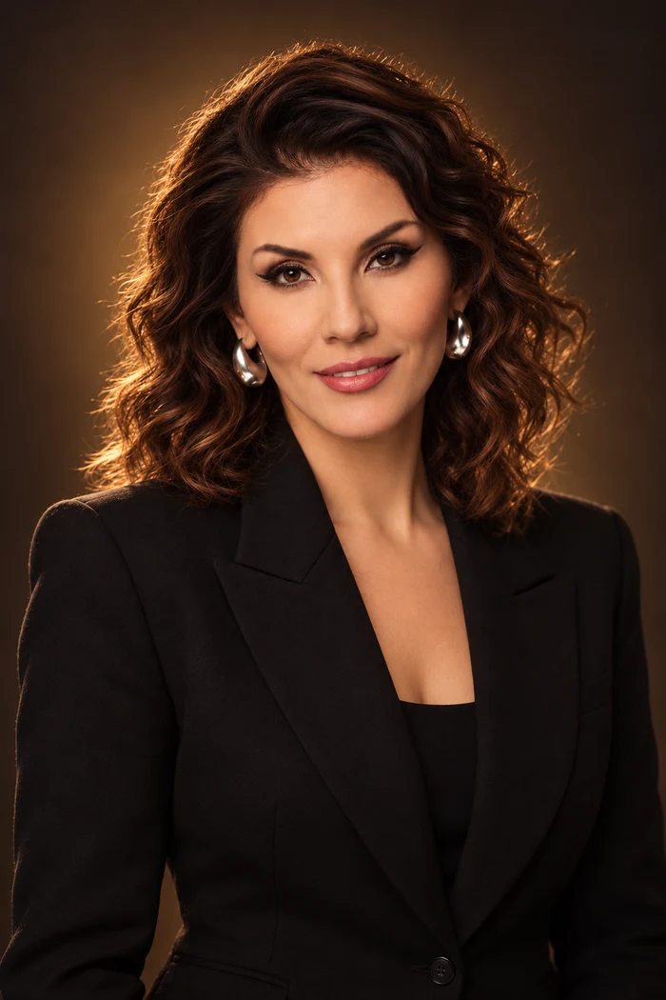

Твой результат
Всё, что происходит у тебя в любви, держится на конкретных внутренних барьерах, которые складывались у тебя годами.
Видео-разбор твоего результата
Посмотри видеорасшифровку, затем читай текст ниже
Этот текст для тебя, если:
- ты заботишься, стараешься, вкладываешься в отношения, но из года в год тепла и внимания к тебе меньше год от года. И сейчас это особенно больно
- тебе трудно принять подарок или заботу: становится неловко и тревожно, будто потом придётся это «отрабатывать»
- ты видишь, как другие женщины просят и получают, а ты хочешь того же и молчишь; и завидуешь тем, кого любят и балуют просто так
- ты который год откладываешь разговор о том, что для тебя важно, потому что «сейчас не время» и «он и так устаёт»
- ты боишься начать серьёзный разговор с мужчиной, долго подбираешь слова, а потом всё равно говоришь не то
- ты тянешь работу, дом, семью, а на себя саму никогда не хватает ни сил, ни времени
- тебе страшно перестать быть удобной: кажется, тогда он уйдёт, ведь держаться за тебя будет уже незачем
- тебе неловко быть счастливее мамы, и при мысли об этом поднимается вина перед ней
- тебе страшно попросить что-то у мужчины: в глубине души ты считаешь, что заботу «просто так» ещё надо заслужить
- ты ценишь только ту любовь, которую «выстрадала» и «заслужила», а лёгкие тёплые отношения кажутся тебе ненастоящими
Почему прошлые попытки не сработали
Аффирмации
Повторять «я достойна любви» можно годами. Фраза не меняет поведение в ту минуту, когда нужно сказать мужчине, что тебе больно.
Карта желаний
Картинки с кольцом и свадебным платьем поднимают настроение, но не трогают ту секунду, когда включается страх и голос внутри шепчет «лучше промолчи».
«Стараться ещё больше»
Если твои старания и то, что ты получаешь в ответ, почему-то никак не связаны, лишняя забота о нём умножает только твою усталость.
Расстановки
Красиво объясняют, откуда всё пошло, но редко дают понятный шаг на завтра: что сказать, кому и в какой момент.
Резкий ультиматум
Без внутренней опоры он чаще заканчивается откатом после первой ссоры и только укрепляет старую мысль «я так и знала, мне нельзя просить».

Я предлагаю тебе систему, которая работает по шагам
Меня зовут Анна Саба, я психолог. Я не обещаю, что одна модная практика изменит всё. Звучит красиво, но так не работает ни у меня, ни у женщин, с которыми я работаю.
Вместо этого я даю метод. Он разбирает твоё поведение в любви по моментам: где включается тормоз и какое чувство поднимается в эту секунду. Стыд, вина, тревога, обида или страх. И какое действие его останавливает.
Мой тест «Код любви» собрал 150 000 ответов. И по ним видно: то, что мешает в любви, – привычка из детства, собранная из десятков маленьких решений «промолчу в этот раз». Привычку можно разобрать по частям и заменить на другую.
Дальше – практикум именно об этом.
Бесплатный онлайн-практикум
Измени отношения с мужчиной за 4 дня: от «люблю, но тревожусь и терплю» до «мне спокойно, и я любима»
- Найдёшь точную причину, по которой сама отталкиваешь любовь и заботу
- Уйдёт фоновая тревога в отношениях
- Перестанешь бояться говорить о своих чувствах: с мужчиной, с мамой, с самой собой
Как будет меняться твоя ситуация в отношениях после практикума
Убираем тревогу в отношениях
Сейчасждёшь его сообщения, прокручиваешь в голове худшее и не можешь успокоиться, пока он не ответит.
Станеттебе спокойно и рядом с ним, и без него, ты не ищешь подвох в каждой паузе.
Убираем страх близости
Сейчасхочешь тепла, но держишь мужчину на расстоянии, чтобы не было больно, если он уйдёт.
Станетподпускаешь любимого человека близко и доверяешь ему.
Отпускаем старые обиды
Сейчаскопишь обиды и молчишь, а потом срываешься или замыкаешься в себе.
Станетсразу и спокойно говоришь, что тебе неприятно, и вы это обсуждаете.
Перестаёшь быть удобной из чувства вины
Сейчасвина при любом «нет», его комфорт важнее твоего, даже когда тебе самой плохо.
Станетвыбираешь себя и не оправдываешься, когда говоришь о своих желаниях.
Убираем стыд «я недостаточно хороша»
Сейчаскажется, что любовь надо заслужить, и стыдно просить что-то для себя.
Станетлегко принимаешь заботу, подарки и комплименты и чувствуешь, что достойна любви просто так.
Проверь себя прямо сейчас
Ответь честно на три вопроса:
- Можешь принять от мужчины подарок или заботу и не думать, чем за это «расплатиться»?
- Когда ты в последний раз спокойно сказала ему «я хочу этого» и не стала молчать и обижаться?
- Сколько раз за последний год ты говорила себе «сейчас не время» и «потом поговорю с ним»? И разговор так и не случился?
Что говорит внутри тебя прямо сейчас
«Я уже ходила к психологу, а в отношениях ничего не поменялось»
Так бывает, и вот почему: общая работа с психологом касается всей жизни сразу. На практикуме работа узкая и прикладная: конкретная ситуация с мужчиной → чувство, которое её запускает → новое действие, которое ты делаешь сама.
«А если у меня и так нет времени?»
Практикум идёт 4 дня онлайн, 25–28 ноября. Время находится на то, что для нас важно. Посмотри, есть ли в твоём списке дел ты сама или там все, кроме тебя. Это как раз то, с чем мы работаем в шаге 4.
Бесплатный практикум
«Как за 4 дня выйти из угнетающих чувств на новый уровень дохода, энергии, отношений, реализации»
- Даты проведения: 25–28 ноября, онлайн
- Выходим из угнетающих чувств: стыда, вины, тревоги, обиды и страха
- Полную расшифровку твоего результата теста получают участники практикума
- Полная расшифровка и 4 подарка придут в Telegram-бота сразу после регистрации
- Для участников тестирования участие в практикуме бесплатное
Что дальше
Сейчас у тебя есть 2 варианта.
Оставить всё как есть
Ты можешь закрыть эту страницу и вернуться к тем же отношениям, что и три года назад. Ничего страшного не случится: просто пройдёт ещё один год с той же тревогой, теми же обидами и тем же молчанием о главном. И дальше смотреть на женщин, которых любят и балуют, и тихо копить обиду внутри.
Пройти этот путь быстро
Пройти этот путь за 4 дня вместе со мной на бесплатном онлайн-практикуме 25–28 ноября. Выйти из угнетающих чувств, которые мешают тебе быть любимой, и начать получать в отношениях столько же тепла, сколько ты отдаёшь.
Решай сама.